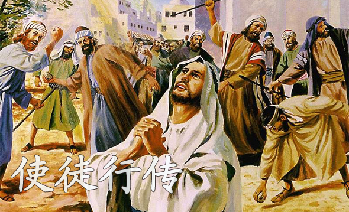

扫描二维码关注"BCBCSermon"
公共号收听更多信息


音频： 下载
经文：
1 提 阿 非 罗 阿 ， 我 已 经 作 了 前 书 ， 论 到 耶 稣 开 头 一 切 所 行 所 教 训 的 ，
2 直 到 他 藉 着 圣 灵 吩 咐 所 拣 选 的 使 徒 ， 以 後 被 接 上 升 的 日 子 为 止 。
3 他 受 害 之 後 ， 用 许 多 的 凭 据 将 自 己 活 活 的 显 给 使 徒 看 ， 四 十 天 之 久 向 他 们 显 现 ， 讲 说 神 国 的 事 。
4 耶 稣 和 他 们 聚 集 的 时 候 ， 嘱 咐 他 们 说 ： 不 要 离 开 耶 路 撒 冷 ， 要 等 候 父 所 应 许 的 ， 就 是 你 们 听 见 我 说 过 的 。
5 约 翰 是 用 水 施 洗 ， 但 不 多 几 日 ， 你 们 要 受 圣 灵 的 洗 。
6 他 们 聚 集 的 时 候 ， 问 耶 稣 说 ： 主 阿 ， 你 复 兴 以 色 列 国 就 在 这 时 候 麽 ？
7 耶 稣 对 他 们 说 ： 父 凭 着 自 己 的 权 柄 所 定 的 时 候 、 日 期 ， 不 是 你 们 可 以 知 道 的 。
8 但 圣 灵 降 临 在 你 们 身 上 ， 你 们 就 必 得 着 能 力 ， 并 要 在 耶 路 撒 冷 、 犹 太 全 地 ， 和 撒 玛 利 亚 ， 直 到 地 极 ， 作 我 的 见 证 。
9 说 了 这 话 ， 他 们 正 看 的 时 候 ， 他 就 被 取 上 升 ， 有 一 朵 云 彩 把 他 接 去 ， 便 看 不 见 他 了 。
10 当 他 往 上 去 ， 他 们 定 睛 望 天 的 时 候 ， 忽 然 有 两 个 人 身 穿 白 衣 ， 站 在 旁 边 ， 说 ：
11 加 利 利 人 哪 ， 你 们 为 甚 麽 站 着 望 天 呢 ？ 这 离 开 你 们 被 接 升 天 的 耶 稣 ， 你 们 见 他 怎 样 往 天 上 去 ， 他 还 要 怎 样 来 。
12 有 一 座 山 ， 名 叫 橄 榄 山 ， 离 耶 路 撒 冷 不 远 ， 约 有 安 息 日 可 走 的 路 程 。 当 下 ， 门 徒 从 那 里 回 耶 路 撒 冷 去 ，
13 进 了 城 ， 就 上 了 所 住 的 一 间 楼 房 ； 在 那 里 有 彼 得 、 约 翰 、 雅 各 、 安 得 烈 、 腓 力 、 多 马 、 巴 多 罗 买 、 马 太 、 亚 勒 腓 的 儿 子 雅 各 、 奋 锐 党 的 西 门 ， 和 雅 各 的 儿 子 （ 或 作 ： 兄 弟 ） 犹 大 。
14 这 些 人 同 着 几 个 妇 人 和 耶 稣 的 母 亲 马 利 亚 ， 并 耶 稣 的 弟 兄 ， 都 同 心 合 意 的 恒 切 祷 告 。
扫描二维码关注"BCBCSermon"
公共号收听更多信息